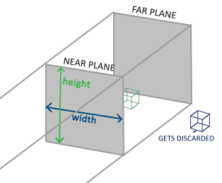

Tear Engine
Table of Contents
Build a project
Why need an engine
为什么要专门开发游戏引擎？为什么要使用游戏引擎来开发游戏？游戏引擎的优势在哪？ 简言之：开发游戏不是绝对需要引擎的。但这建立在两个基础上，1）这个游戏很简单，2）你在过往的项目中积累了大量的代码。 游戏引擎本质上就是一堆游戏开发库，用来节省游戏开发的时间。使用统一的引擎，利于团队在统一的标准上开发游戏，节约团队开发时间；引擎跨平台，节约游戏移植时间；游戏逻辑与基础功能分离，开发效率更高。
Choice

引擎只是一个框架，一个库，所以实现方式多样，技术选型也受多方面影响。比如语言方面，c,c++,c#,java,python等等都有，然后是硬件平台，PC，MAC，移动，主机等等，还有系统，windows，linux，macos，ios，android，xbox，ps4等等。 这里，我的开发选择是用C++开发一个跨平台引擎，至少支持windows和linux。使用emacs编辑，premake其他工程文件。
Create engine core lib
install dependence
- glfw3
- linux/macos
- sudo apt-get install cmake xorg-dev
- git clone https://github.com/glfw/glfw.git
- cd glfw
- mkdir build
- cd build
- cmake ../
- make && sudo make install
- windows
- go to http://www.glfw.org/download.html
- download windows pre-compiled binary and unpack
- go to your visual studio installed path, in VC folder
- put GLFW to include folder, glfw3.lib glfw3dll.lib to lib folder, glfw3.dll to bin folder
- linux/macos
- premake
为了管理不同平台的工程文件，我们采用premake构建工具，它与cmake类似，但用lua代码进行配置。
window framework
游戏引擎为游戏服务。游戏运行于操作系统上，它首先是应用程序，然后才是游戏。所以，游戏首先需要的是用于展示内容的“窗口”。窗口在不同的操作系统上有不同的称呼，所以建立窗口的方式也是操作系统强相关的。 这里我采用 GLFW 库来简化窗口的创建。
- create a window
现在我们使用glfw，用最少的代码创建一个空窗口。
#include <GLFW/glfw3.h> #include <stdlib.h> #include <stdio.h> static void error_callback(int error, const char *description) { fprintf(stderr, "TxxE Error: %s\n", description); } static void key_callback(GLFWwindow *window, int key, int scancode, int action, int mods) { if(key == GLFW_KEY_ESCAPE && action == GLFW_PRESS){ glfwSetWindowShouldClose(window, GLFW_TRUE); } } int main(void) { glfwSetErrorCallback(error_callback); if(!glfwInit()){ return -1; } GLFWwindow *window = glfwCreateWindow(800, 600, "Txx", NULL, NULL); if(!window){ glfwTerminate(); return -1; } glfwSetKeyCallback(window, key_callback); while(!glfwWindowShouldClose(window)){ glClear(GL_COLOR_BUFFER_BIT); glfwSwapBuffers(window); glfwPollEvents(); } glfwDestroyWindow(window); glfwTerminate(); return 0; }
- build a application
在ubuntu上快速编译运行一下。
g++ main.cpp -lglfw3 -lX11 -lXrandr -lXinerama -lXi -lXxf86vm -lXcursor -lGL -lpthread -ldl
稍微正常的人都不会愿意每次编译都写上这么一段，所以makefile文件是必须的。而为了跨平台，又需要一个能一键生成各个平台的工程文件。所以我们使用premake来生成各个平台的工程文件。配置信息见 premake5.lua。
engine framework
游戏最基本的运行逻辑， 加载 ， 初始化 ， 更新 ， 结束 。我们的引擎会在必要的时候调用这四个操作来驱动游戏运行。
extern bool game_load(); extern bool game_init(); extern void game_update(); extern void game_end();
所有基于本引擎的游戏必须实现这四个函数。
engine lib
现在我们来将引擎做成一个库，真正的游戏就建立在这个库之上。
// Tear.h #ifndef __TEAR_H__ #define __TEAR_H__ extern bool game_load(); extern bool game_init(); extern void game_update(); extern void game_end(); namespace Tear{ class Engine{ int m_window_width; int m_window_height; public: Engine(); ~Engine(); int init(int width, int height); void update(); void close(); int getWindowWidth(){ return this->m_window_width; } void setWindowWidth(int value){ this->m_window_width = value; } int getWindowHeight(){ return this->m_window_height; } void setWindowHeight(int value){ this->m_window_height = value; } }; }; // global engine object extern Tear::Engine *g_tear_engine; #endif
// Tear.cpp #include "Tear.h" namespace Tear{ Engine::Engine():m_window_width(800), m_window_height(600) { } Engine::~Engine() { } int Engine::init(int width, int height) { if(!game_init()){ return 0; } return 1; } void Engine::update() { game_update(); } void Engine::close() { game_end(); } }
// main.cpp #include "Tear.h" #include <GLFW/glfw3.h> #include <cstdlib> #include <cstdio> static void error_callback(int error, const char *description) { fprintf(stderr, "glfw Error: %s\n", description); } static void key_callback(GLFWwindow *window, int key, int scancode, int action, int mods) { if(key == GLFW_KEY_ESCAPE && action == GLFW_PRESS){ glfwSetWindowShouldClose(window, GLFW_TRUE); } } Tear::Engine *g_tear_engine; int main(void) { glfwSetErrorCallback(error_callback); if(!glfwInit()){ return -1; } g_tear_engine = new Tear::Engine(); if(!game_load()){ fprintf(stderr, "game load fail\n"); return 0; } glfwWindowHint(GLFW_CONTEXT_VERSION_MAJOR, 3); glfwWindowHint(GLFW_CONTEXT_VERSION_MINOR, 3); glfwWindowHint(GLFW_OPENGL_PROFILE, GLFW_OPENGL_CORE_PROFILE); glfwWindowHint(GLFW_RESIZABLE, GL_FALSE); GLFWwindow *window = glfwCreateWindow(g_tear_engine->getWindowWidth(), g_tear_engine->getWindowHeight(), "Tear Engine", nullptr, nullptr); if(!window){ fprintf(stderr, "Failed to open GLFW window\n"); glfwTerminate(); return -1; } glfwSetKeyCallback(window, key_callback); if(!g_tear_engine->init(g_tear_engine->getWindowWidth(), g_tear_engine->getWindowHeight())){ fprintf(stderr, "game engine init fail\n"); return 0; } while (!glfwWindowShouldClose(window)){ glfwPollEvents(); g_tear_engine->update(); glfwSwapBuffers(window); } g_tear_engine->close(); delete g_tear_engine; glfwDestroyWindow(window); glfwTerminate(); return 0; }
Test
引擎已经弄好，现在来写一个游戏吧。
// example_01.cpp #include "Tear.h" bool game_load() { g_tear_engine->setWindowWidth(640); g_tear_engine->setWindowHeight(480); return true; } bool game_init() { return true; } void game_update() { } void game_end() { }
运行成功后会出现一个黑色的窗口，这一次的窗口已经不再是纯粹的窗口了。它本质上已经变成了通过引擎驱动起来的游戏。通过在上述四个gamexx函数里不断添加游戏逻辑，就能产生不同的游戏。
Rendering
游戏最重要的元素当属视觉效果，毕竟人类70%的信息获取也是视觉提供的。游戏的画面在图形学中称为 渲染（Rendering） 。 游戏引擎在窗口支持之后的第一要务就是图形渲染支持。
图形API
我们要在窗口上画图，做渲染，离不开硬件的支持。最简单的画图就是直接往显示器内存写像素值。而今，随着技术的发展，GPU的普及，绘图的工作 基本由GPU负责。为了避免直接操作硬件，从而抽象出各类图形API，提高绘图的开发效率。下面是当前主流的几个图形API。
- OpenGL： 传承自SGI，最早的专用图形API，属于开放性标准。因为跨平台，多用于专业领域，游戏领域甚少使用。
- Direc3D： 微软私有标准，仅限于windows，XBOX,winphone平台。桌面图形API的霸主，设计精良，效率一流，桌面游戏开发的不二之选。
- OpenGL ES： 精简版 OpenGL，专为小型嵌入式设备设计。因移动平台崛起而风靡。
- Metal： 苹果自家最新私有标准，为改良OpenGL ES诞生。
- Vulkan： 下一代 OpenGL 标准，统一桌面移动两种 GL，降低驱动层消耗，最大化利用硬件能力。
使用 OpenGL/OpenGL ES
由于当前移动游戏崛起，以前不受游戏开发待见的OpenGL因为跨平台性焕发了第二春。所以，我们的游戏引擎的图形API支持就从OpenGL 开始。
GLEW（桌面）
同前面所使用的glfw类似，glew是简化使用OpenGL的一个库。因为OpenGL只是一个标准/规范，具体的实现是由驱动开发商针对特定显卡实现的。由于OpenGL驱动版本众多，它大多数函数的位置都无法在编译时确定下来，需要在运行时查询。任务就落在了开发者身上，开发者需要在运行时获取函数地址并将其保存在一个函数指针中供以后使用。一般这步操作由操作系统实现。但OpenGL当前版本已经到了4.x（终止开发，转向vulkan），而部分操作系统没有及时支持高版本的API。其中最狠的就是windows上，只支持最古老的OpenGL1.1。所以我们需要绕过操作系统，在运行时查询函数地址直接使用显卡提供的高版本API。而取函数地址的方式因平台各异，所以GLEW封装了这层操作，向上提供纯粹的OpenGL接口，隐藏平台差异，版本差异，简化使用GL。
- install
- linux
- git clone https://github.com/nigels-com/glew.git glew
- cd glew/auto
- make
- cd ..
- sudo make install
- windows
- download pre-binary
- linux
EGL（移动）
移动端使用OpenGLES，但GLES本身只是一个操作GPU的API，不具备与平台Native层交互的能力。EGL因此而生——作为GLES与Native窗口的桥梁。EGL 是 OpenGL ES（嵌入式）和底层 Native 平台视窗系统之间的接口。EGL API 是独立于OpenGL ES各版本标准的独立API ，其主要作用是为OpenGL指令创建 Context 、绘制目标Surface 、配置Framebuffer属性、Swap提交绘制结果等。 此外，EGL为GPU厂商和OS窗口系统之间提供了一个标准配置接口。一般移动操作系统对GLES的支持非常及时，所以GLEW就不是很必要了。 对于android，可以使用SDK提供的GLSurfaceView简化开发。对于ios，为了适应cocoa框架，苹果做了一点修改，叫EAGL。具体使用参阅各自平台的文档。
绘制一个三角形
使用OpenGL绘制一个三角形应该是“Hello World”级别的GL程序。
Pipeline
OpenGL是一个3D图形API，所以其中任何事物都位于2D空间中。而我们接受输出的对象（窗口、屏幕）却是2D的。所以整个OpenGL的大部分工作就是将3D世界转化为2D像素数组。这个流程叫 图形流水线（Graphics Pipeline） ，一堆原始的三维图形数据，经过流水线各个阶段的处理，最终输出显示在屏幕上。

就像工厂里的流水线一样，渲染流水线也分多个阶段，每个阶段接收上个阶段的输出作为输入，然后向后输出相应的数据。每一个阶段拆分的足够模块化，使得任务可以高度并行。同时，GPU本身是个多处理器架构，一个GPU可能同时包含上千的流处理器核心。每个核心运行 shader（着色器） ，处理传入的数据，互不干扰。 流水线中的一部分允许开发者直接控制，意味着这些阶段GPU核心可以运行开发者自己写的shader。这样的好处在于，对于渲染结果，开发者可以进行更细致的控制。
可编程着色器
可编程着色器指的就是可以由开发者自己编写的着色器，也就是平时说的写shader。与之对应的就是固定着色器，也叫默认着色器，开发者不能用自己的shader替换，只能通过API进行开关控制。 现代图形API基本都要求开发者至少提供一个 顶点着色器（vertex shader） 和一个 片段着色器（fragment shader） 。（其他API可能名字不同，比如D3D里叫顶点着色器和像素着色器。）为什么要必须提供呢，因为图形API对这两个阶段没有提供默认shader了，所以需要开发者提供。下面提供两个最基础的着色器。
// vs #version 330 core layout (location = 0) in vec3 position; void main() { gl_Position = vec4(position.x, position.y, position.z, 1.0); }
// fs #version 330 core out vec4 color; void main() { color = vec4(1.0f, 0.5f, 0.2f, 1.0f); }
掌握渲染流水线和可编程着色器两个概念，然后配合OpenGL提供的API，就可以绘制出你的第一个一个三角形。对于移动端，可参阅网上的资料，搜索关键字 EGL, OpenGLES, 三角形 。
纹理
图形由顶点构成，图形的颜色也由顶点的颜色决定。我们为每个顶点设置颜色之后，其他非顶点位置的颜色则是自动插值出来的。理论上，你可以设置足够密集的顶点（与像素点一样多），然后为每个顶点逐一设置一个颜色，就可以表现出足够细节的图形。但很明显，这种办法太麻烦，额外需求太高。 纹理（Texture） 应运而生。纹理一般作为2D图片出现（1D,3D的也有），用来映射到图形上添加图形的细节。只需指定有限的映射点，即可生成足够的细节。

所谓映射（Map），需要指定三角形每个顶点各自对应纹理的哪个部分。每个顶点都会关联一个纹理坐标，用于标明从纹理采样点。纹理坐标起于左下角的(0,0)，终于右上角的(1,1)。设定之后，图形的其他位置会做对应的插值。 图形硬件只认识纹理格式，而平时我们见的图片一般是png,jpg之类的图像格式。所以要使用纹理，首先要将图像文件加载，解析并生成纹理。针对图像文件的加载解析，可以参考开源的图像库，或者自己写。移动端可以直接使用系统提供的库。 图像文件经过加载解析后变成原始的图像数据，然后通过OpenGL API将数据生成纹理。最终通过shader做纹理映射。（记得生成纹理之后，将加载进来的图像数据释放）
OpenGL中主要的纹理相关API有 glGenTextures, glBindTexture, glTexParameter*, glTexImage2D 。分别用于生成、绑定、设参数、创建纹理数据。然后在shader中有对应的 sampler 表示一个纹理单元，通过 glUniform* 将纹理对象和纹理单元绑定起来，这样shader中就可以使用纹理数据了。
// vs #version 330 core layout (location = 0) in vec3 position; layout (location = 1) in vec3 color; layout (location = 2) in vec2 texCoord; out vec3 ourColor; out vec2 TexCoord; void main() { gl_Position = vec4(position, 1.0f); ourColor = color; TexCoord = texCoord; }
// fs #version 330 core in vec3 ourColor; in vec2 TexCoord; out vec4 color; uniform sampler2D ourTexture; void main() { color = texture(ourTexture, TexCoord); }
OpenGL至少保证可同时使用16个纹理单元，每个纹理单元对应一张纹理，即使说可以同时使用至少16张纹理。这样在着色器中可以做常见的多纹理混合效果。
Main Loop
游戏循环 应该是游戏程序与其他应用程序最大的区别。普通应用一般是事件驱动或者消息驱动，即接收到事件（消息）后才有反馈，而游戏循环是 处理消息但不等待消息 ，始终运行。 最基本的游戏循环包括 游戏更新 和 游戏渲染 。最直接的写法如下：
while(true){ game_update(); game_render(); }
update负责让游戏逻辑（数据）向前计算一步（比如AI和物理计算），render负责将当前游戏状态渲染并展示给玩家。将游戏看作一个世界，update直接影响这个世界运行的快慢，而render出来的结果只不过是这个世界某一时刻的快照。
上述写法表达的意思是， 有多快跑多快 。而具体的快慢取决于update和render的复杂度加上目标机器的牛逼程度。表现出来的效果就是渣机在慢动作，神机快的看不清。这显然影响了正确性。
理想的游戏循环应该是硬件无关的，硬件的能力不能影响游戏update的速率，最多影响render出来的流畅性。 就是所谓的 定时update，变时render
double previous = getCurrentTime(); double lag = 0.0; while (true){ double current = getCurrentTime(); double elapsed = current - previous; previous = current; lag += elapsed; processInput(); while (lag >= MS_PER_UPDATE){ update(); lag -= MS_PER_UPDATE; } render(lag / MS_PER_UPDATE); }
每一个循环开始，通过两次循环之间的差值，计算出游戏时间落后现实时间的差值lag。然后通过内部循环，以固定间隔做update，追上现实时间，然后渲染输出并进入下一个循环。上述的 MSPERUPDATE 即是所谓的 固定update间隔 ，这个间隔越短，追赶次数越多；间隔越大，跳帧越明显。理论上这个值小于16ms（60FPS)，但要保证大于update函数本身执行的时间（否则永远追不上现实时间，所以为了保证不卡死，可以设一个内部循环最大值）。
我们以固定的频率进行update，render的时间点不总是和update同步的。此时，render要保证平滑流畅，就不能直接使用前后任意update下的状态值，而是应该取对应的差值。比如，一颗高速的子弹，上一个update下，位于（0,0），下一个update下将在（100,0），而在两者之间需要渲染一帧画面出来，那子弹应该在哪里呢？答案就是取两者之间的差值。虽然实际上子弹还未update到该位置，render出来的位置属于 预测 点，可能这个预测点是错误的，但为了平滑度与流畅度，这点“视觉错误”可以接受。
render(lag / MS_PER_UPDATE)
这里我们将它除以MSPERUPDATE是为了将值标准化。这样传入render()的值将在0(恰好在前一帧)到1(恰好在后一帧)之间(忽略更新时间步长)。通过这一方法，渲染引擎无需担心帧率。它仅仅处理0-1值之间的情况。
下面给出unity的主循环流程图：感受下成熟引擎的做法。
还可以看下ejoy2d的做法：
/* window.c */ /* Loop until the user closes the window */ while(!glfwWindowShouldClose(window)) { // update frame uint32_t current = _gettime(); if(current - timestamp >= UPDATE_INTERVAL) { timestamp = current; ejoy2d_win_update(); ejoy2d_win_frame(); } /* Swap front and back buffers */ glfwSwapBuffers(window); /* Poll for and process events */ glfwPollEvents(); }
/* winfw.c */ void ejoy2d_win_update() { ejoy2d_game_update(G->game, 0.01f); } void ejoy2d_win_frame() { ejoy2d_game_drawframe(G->game); }
static void logic_frame(lua_State *L) { lua_pushvalue(L, UPDATE_FUNCTION); call(L, 0, 0); lua_settop(L, TOP_FUNCTION); } void ejoy2d_game_update(struct game *G, float time) { if (G->logic_time == 0) { G->real_time = 1.0f/LOGIC_FRAME; } else { G->real_time += time; } while (G->logic_time < G->real_time) { logic_frame(G->L); G->logic_time += 1.0f/LOGIC_FRAME; } } void ejoy2d_game_drawframe(struct game *G) { reset_drawcall_count(); lua_pushvalue(G->L, DRAWFRAME_FUNCTION); call(G->L, 0, 0); lua_settop(G->L, TOP_FUNCTION); shader_flush(); label_flush(); //int cnt = drawcall_count(); //printf("-> %d\n", cnt); }
Sprite
我们使用 Sprite 来表示一个2D渲染对象。特意注明2D，是因为渲染Sprite不需要像3D渲染那样根据摄像机的视角计算出透视坐标和光照来展现三维物体的表面。Sprite只需要最基本的 position scale rotation shader 即可渲染在屏幕上（就像之前我们做的所有渲染尝试）。
2D投影
OpenGL本身是个3D图形API，其所有的概念都是针对三维世界的。但我们能接收到的图像输出目前只有二维（比如显示器）。所以要展现我们在三维世界创建的游戏世界就需要投影到二维平面上面。（局部空间->世界空间->观察空间->裁剪空间(标准化设备坐标)->屏幕空间）这些坐标系的变换都是通过矩阵变换而来。 针对二维渲染，我们不需要透视处理，所以使用正交投影（没有近大远小的视觉感受）。
 
/* *前两个参数指定了平截头体的左右坐标，第三和第四参数指定了平截头体的底部和顶部。 *通过这四个参数我们定义了近平面和远平面的大小，然后第五和第六个参数则定义了近平面和远平面的距离。 *这个投影矩阵会将处于这些x，y，z值范围内的坐标变换为标准化设备坐标。 */ glm::mat4 projection = glm::ortho(0.0f, 800.0f, 600.0f, 0.0f, -1.0f, 1.0f);

设定这样的正交投影矩阵后，世界空间坐标就直接与最终的屏幕空间坐标对应。这样我们在开发2D游戏时，直接指定顶点坐标为屏幕上的像素坐标，相对来讲就直观许多。同时，我们所使用的顶点着色器也要做相应的改变，每一个顶点的位置都要经过投影矩阵变换一下。
gl_Position = projection * model * vec4(vertex.xy, 0.0, 1.0);
SpriteRenderer
我们定义一个 SpriteRenderer 类来表示2D渲染对象。一般来讲，一个具备渲染能力的2D对象需要的属性有 position size rotate color shader, texture 可选（没有纹理的sprite），定义如下：
class SpriteRenderer { glm::vec2 position; glm::vec2 size; glm::vec3 color; GLfloat rotate; GLuint vao; GLuint shader; GLuint texture2d; public: SpriteRenderer(glm::vec2 p = glm::vec2(0.0f), glm::vec2 s = glm::vec2(1.0f), GLfloat r = 0.0f, glm::vec3 c = glm::vec3(1.0f)); ~SpriteRenderer(); void draw(); /* other method */ };
SpriteRenderer本质上就是由两个三角形构成的矩形块。所以回想前面我们做过的渲染实验。一个sprite的构造与渲染其实就是把之前我们写过的代码好好封装一下。同时，为了更好的表示物体的空间属性和转换，采用了 向量（vector 和 矩阵（matrix） 。简言之，向量与矩阵都是多维的，向量用来表示位置与方向，矩阵用来表示转换。这里，我直接用了 glm 这个数学库，自己实现一下也很简单。
SpriteRenderer::SpriteRenderer(glm::vec2 p, glm::vec2 s, GLfloat r, glm::vec3 c): position(p), size(s), rotate(r), color(c), vao(0), shader(0), texture2d(0) { GLuint vbo; GLfloat vertices[] = { //pos //texture 0.0f, 1.0f, 0.0f, 1.0f, 1.0f, 0.0f, 1.0f, 0.0f, 0.0f, 0.0f, 0.0f, 0.0f, 0.0f, 1.0f, 0.0f, 1.0f, 1.0f, 1.0f, 1.0f, 1.0f, 1.0f, 0.0f, 1.0f, 0.0f, }; glGenVertexArrays(1, &this->vao); glGenBuffers(1, &vbo); glBindBuffer(GL_ARRAY_BUFFER, vbo); glBufferData(GL_ARRAY_BUFFER, sizeof(vertices), vertices, GL_STATIC_DRAW); glBindVertexArray(this->vao); glEnableVertexAttribArray(0); glVertexAttribPointer(0, 4, GL_FLOAT, GL_FALSE, 4*sizeof(GLfloat), (GLfloat*)0); glBindBuffer(GL_ARRAY_BUFFER, 0); glBindVertexArray(0); }
这里顶点数据里面，我们根据2D图形的特殊性，pos只要了2个分量，丢弃了顶点color，保留了纹理坐标。这样我们可以将一个顶点的数据塞进一个 vector4 里面，节约内存。（为什么丢弃顶点颜色呢？因为2D图形很少做光照计算，其颜色值基本取自对应的纹素值；再者，即使有需要顶点颜色的时候，也可以在通过直接给shader传值来间接实现）
同理，sprite的渲染也是将之前零散的代码聚合封装一下。我们设置的pos，size和rotate实质上就是在变换sprite。比如设置pos为（10,10），实际上是将sprite从（0,0）移动到（10,10），设置size则等同于缩放。如此，每一次sprite的绘制，都会经历坐标变换，着色渲染（跑一遍渲染流水线）。
针对三维空间中物体的变换，变换的轴都是固定的。而矩阵乘法不满足交换律（变换顺序不同，结果不同），所以符合期望的变换顺序 缩放、旋转、平移 。（由于矩阵乘法是从右往左的，所以写代码的时候又要反过来写）
针对二维旋转，我们默认是以左上角为原点的，旋转操作可能不是一般想要的那种旋转，所以这里做了一点额外的操作，在旋转前将origin移到四边形的中心，再进行旋转，之后再移回去。

如此，SpriteRenderer的绘制代码就差不多写出来了：
void SpriteRenderer::draw() { // create model-view matrix // (transformations are: scale happens first, then rotation and then finall translation happens; reversed order) glm::mat4 model; model = glm::translate(model, glm::vec3(this->position, 0.0f)); model = glm::translate(model, glm::vec3(0.5f*this->size.x, 0.5f*this->size.y, 0.0f)); model = glm::rotate(model, this->rotate, glm::vec3(0.0f, 0.0f, 1.0f)); model = glm::translate(model, glm::vec3(-0.5f*this->size.x, -0.5f*this->size.y, 0.0f)); model = glm::scale(model, glm::vec3(this->size, 1.0f)); glUseProgram(this->shader); glUniformMatrix4fv(glGetUniformLocation(this->shader, "model"), 1, GL_FALSE, glm::value_ptr(model)); glUniform3f(glGetUniformLocation(this->shader, "scolor"), this->color.x, this->color.y, this->color.z); if(this->texture2d != 0){ glActiveTexture(GL_TEXTURE0); glBindTexture(GL_TEXTURE_2D, this->texture2d); glUniform1i(glGetUniformLocation(this->shader, "image"), 0); } glBindVertexArray(this->vao); glDrawArrays(GL_TRIANGLES, 0, 6); glBindVertexArray(0); }
然后，模型变换完毕，最终送到shader中，通过投影矩阵将三维投影成二维。
因此，相应的shader也要做些改变。
#version 330 core layout (location = 0) in vec4 vertex; // <vec2 position, vec2 texCoords> out vec2 TexCoords; uniform mat4 model; uniform mat4 projection; void main() { TexCoords = vertex.zw; gl_Position = projection * model * vec4(vertex.xy, 0.0, 1.0); }
#version 330 core in vec2 TexCoords; out vec4 color; uniform sampler2D image; uniform vec3 scolor; void main() { color = vec4(scolor, 1.0) * texture(image, TexCoords); }